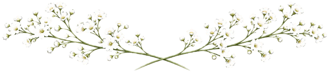

Det Sigmund ser først


Rikke & Valdemar
inviterer dere til sitt bryllup

Lørdag 27. mai 2028
Hardingasete · Hardanger
for Sigmund og bestemor
Svar innen 4. januar 2028
Vi gleder oss til å feire med dere
Programmet
Vielse, middag og fest – hele lørdagen time for time.
Kortere svarfrist: «Svar innen 4. januar 2028».
Menyen er høyere og har mer luft rundt ordene. Seglet ligger nå helt synlig under menyen. Brudesløret er den nye versjonen.
Når han trykker «Svar»
Om oss
Hvordan vi møttes, og hvorfor vi gifter oss.
Svar på invitasjonen
Barnefritt bryllup – vi håper dere får en fin helg for dere selv.
Svar innen tirsdag 4. januar 2028 kl. 23:59
Svar på invitasjonenHer står hele fristen, med ukedag og klokkeslett, rett over knappen. Øverst på forsida står den korte versjonen.